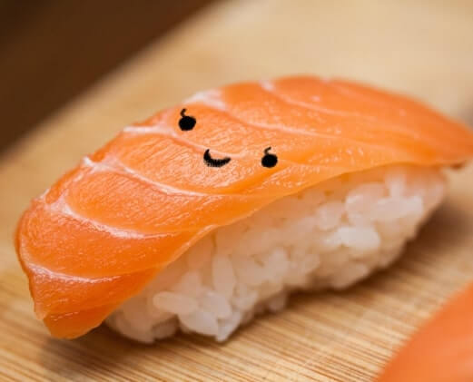

Welcome to My Sushi Bar!
Meet The Artist
Hello, it's smolsushi! I'm a digital illustrator based in the Philippines and currently pursuing a Bachelor of Arts in Multimedia Arts (AB MMA). Although I initially began my digital art journey in 2015, I faced a period of diminished motivation and support that caused me to pause. However, I am now delighted to have reignited my passion for drawing. I have witnessed remarkable progress in my artwork, connected with incredible artists, and established a supportive network consisting of my family, friends, and boyfriend. My drawing subjects vary, depending on my mood, but I particularly enjoy bringing fictional characters from my favorite shows, anime, webtoon comics, or games to life.